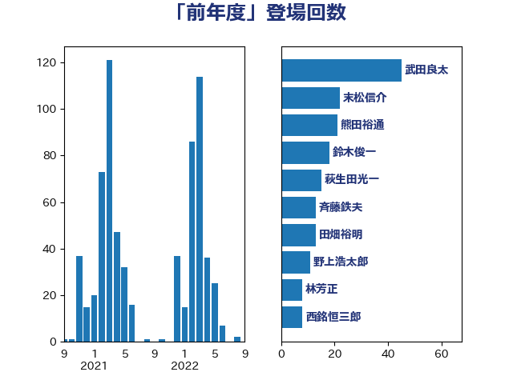

単語「前年度」

| 武田良太 | 自由民主党 | 45 回 |
| 末松信介 | 自由民主党 | 22 回 |
| 熊田裕通 | 自由民主党 | 21 回 |
| 鈴木俊一 | 自由民主党 | 18 回 |
| 萩生田光一 | 自由民主党 | 15 回 |
| 斉藤鉄夫 | 公明党 | 13 回 |
| 田畑裕明 | 自由民主党 | 13 回 |
| 野上浩太郎 | 自由民主党 | 11 回 |
| 林芳正 | 自由民主党 | 8 回 |
| 西銘恒三郎 | 自由民主党 | 8 回 |
| 伊藤岳 | 日本共産党 | 7 回 |
| 岸信夫 | 自由民主党 | 7 回 |
| 茂木敏充 | 自由民主党 | 7 回 |
| 階猛 | 立憲民主党 | 6 回 |
| 麻生太郎 | 自由民主党 | 6 回 |
| 中司宏 | 日本維新の会 | 5 回 |
| 前原誠司 | 国民民主党 | 5 回 |
| おおつき紅葉 | 立憲民主党 | 4 回 |
| 宮本岳志 | 日本共産党 | 4 回 |
| 杉久武 | 公明党 | 4 回 |
| 柴田巧 | 日本維新の会 | 4 回 |
| 根本匠 | 自由民主党 | 4 回 |
| 横山信一 | 公明党 | 4 回 |
| 浜口誠 | 国民民主党 | 4 回 |
| 田村憲久 | 自由民主党 | 4 回 |
| 石川香織 | 立憲民主党 | 4 回 |
| 加藤勝信 | 自由民主党 | 3 回 |
| 大塚耕平 | 国民民主党 | 3 回 |
| 宮崎雅夫 | 自由民主党 | 3 回 |
| 岸真紀子 | 立憲民主党 | 3 回 |
| 後藤茂之 | 自由民主党 | 3 回 |
| 浜田聡 | NHK党 | 3 回 |
| 田村智子 | 日本共産党 | 3 回 |
| 石井正弘 | 自由民主党 | 3 回 |
| 芳賀道也 | 国民民主党 | 3 回 |
| 金田勝年 | 自由民主党 | 3 回 |
| 高野光二郎 | 自由民主党 | 3 回 |
| 伊藤孝江 | 公明党 | 2 回 |
| 佐藤啓 | 自由民主党 | 2 回 |
| 吉田忠智 | 立憲民主党 | 2 回 |
| 國場幸之助 | 自由民主党 | 2 回 |
| 坂本哲志 | 自由民主党 | 2 回 |
| 塩川鉄也 | 日本共産党 | 2 回 |
| 室井邦彦 | 日本維新の会 | 2 回 |
| 小沢雅仁 | 立憲民主党 | 2 回 |
| 小西洋之 | 立憲民主党 | 2 回 |
| 岡本あき子 | 立憲民主党 | 2 回 |
| 岸田文雄 | 自由民主党 | 2 回 |
| 川合孝典 | 国民民主党 | 2 回 |
| 平沢勝栄 | 自由民主党 | 2 回 |
| 杉尾秀哉 | 立憲民主党 | 2 回 |
| 東国幹 | 自由民主党 | 2 回 |
| 松野博一 | 自由民主党 | 2 回 |
| 柚木道義 | 立憲民主党 | 2 回 |
| 横沢高徳 | 立憲民主党 | 2 回 |
| 武部新 | 自由民主党 | 2 回 |
| 沢田良 | 日本維新の会 | 2 回 |
| 津島淳 | 自由民主党 | 2 回 |
| 牧島かれん | 自由民主党 | 2 回 |
| 田所嘉徳 | 自由民主党 | 2 回 |
| 石井苗子 | 日本維新の会 | 2 回 |
| 石垣のりこ | 立憲民主党 | 2 回 |
| 神谷裕 | 立憲民主党 | 2 回 |
| 竹内真二 | 公明党 | 2 回 |
| 竹内譲 | 公明党 | 2 回 |
| 紙智子 | 日本共産党 | 2 回 |
| 羽田次郎 | 立憲民主党 | 2 回 |
| 菅義偉 | 自由民主党 | 2 回 |
| 蓮舫 | 立憲民主党 | 2 回 |
| 赤羽一嘉 | 公明党 | 2 回 |
| 足立敏之 | 自由民主党 | 2 回 |
| 輿水恵一 | 公明党 | 2 回 |
| 野田佳彦 | 立憲民主党 | 2 回 |
| 野田国義 | 立憲民主党 | 2 回 |
| 金子恭之 | 自由民主党 | 2 回 |
| 青柳陽一郎 | 立憲民主党 | 2 回 |
| 上川陽子 | 自由民主党 | 1 回 |
| 上田清司 | 国民民主党 | 1 回 |
| 中川宏昌 | 公明党 | 1 回 |
| 中村裕之 | 自由民主党 | 1 回 |
| 中西健治 | 自由民主党 | 1 回 |
| 倉林明子 | 日本共産党 | 1 回 |
| 冨樫博之 | 自由民主党 | 1 回 |
| 吉川ゆうみ | 自由民主党 | 1 回 |
| 吉田統彦 | 立憲民主党 | 1 回 |
| 吉良よし子 | 日本共産党 | 1 回 |
| 吉良州司 | 無所属 | 1 回 |
| 土屋品子 | 自由民主党 | 1 回 |
| 城井崇 | 立憲民主党 | 1 回 |
| 大石あきこ | れいわ新選組 | 1 回 |
| 大野敬太郎 | 自由民主党 | 1 回 |
| 守島正 | 日本維新の会 | 1 回 |
| 宗清皇一 | 自由民主党 | 1 回 |
| 宮内秀樹 | 自由民主党 | 1 回 |
| 宮本徹 | 日本共産党 | 1 回 |
| 宮路拓馬 | 自由民主党 | 1 回 |
| 小川淳也 | 立憲民主党 | 1 回 |
| 小林鷹之 | 自由民主党 | 1 回 |
| 小田原潔 | 自由民主党 | 1 回 |
| 山本博司 | 公明党 | 1 回 |
| 山田美樹 | 自由民主党 | 1 回 |
| 岬麻紀 | 日本維新の会 | 1 回 |
| 平山佐知子 | 無所属 | 1 回 |
| 平木大作 | 公明党 | 1 回 |
| 後藤祐一 | 立憲民主党 | 1 回 |
| 御法川信英 | 自由民主党 | 1 回 |
| 打越さく良 | 立憲民主党 | 1 回 |
| 朝日健太郎 | 自由民主党 | 1 回 |
| 柘植芳文 | 自由民主党 | 1 回 |
| 柳ヶ瀬裕文 | 日本維新の会 | 1 回 |
| 柳本顕 | 自由民主党 | 1 回 |
| 梅村みずほ | 日本維新の会 | 1 回 |
| 梅村聡 | 日本維新の会 | 1 回 |
| 梶山弘志 | 自由民主党 | 1 回 |
| 森まさこ | 自由民主党 | 1 回 |
| 水岡俊一 | 立憲民主党 | 1 回 |
| 河野太郎 | 自由民主党 | 1 回 |
| 浅野哲 | 国民民主党 | 1 回 |
| 清水貴之 | 日本維新の会 | 1 回 |
| 田村まみ | 国民民主党 | 1 回 |
| 盛山正仁 | 自由民主党 | 1 回 |
| 石井啓一 | 公明党 | 1 回 |
| 神津たけし | 立憲民主党 | 1 回 |
| 秋野公造 | 公明党 | 1 回 |
| 稲富修二 | 立憲民主党 | 1 回 |
| 笠井亮 | 日本共産党 | 1 回 |
| 美延映夫 | 日本維新の会 | 1 回 |
| 舟山康江 | 国民民主党 | 1 回 |
| 舩後靖彦 | れいわ新選組 | 1 回 |
| 藤井比早之 | 自由民主党 | 1 回 |
| 藤巻健太 | 日本維新の会 | 1 回 |
| 藤田文武 | 日本維新の会 | 1 回 |
| 西岡秀子 | 国民民主党 | 1 回 |
| 西村康稔 | 自由民主党 | 1 回 |
| 角田秀穂 | 公明党 | 1 回 |
| 鈴木庸介 | 立憲民主党 | 1 回 |
| 鈴木淳司 | 自由民主党 | 1 回 |
| 長友慎治 | 国民民主党 | 1 回 |
| 阿部司 | 日本維新の会 | 1 回 |
| 青山大人 | 立憲民主党 | 1 回 |
| 高木かおり | 日本維新の会 | 1 回 |
| 高橋光男 | 公明党 | 1 回 |
| 鬼木誠 | 立憲民主党 | 1 回 |
| 黄川田仁志 | 自由民主党 | 1 回 |